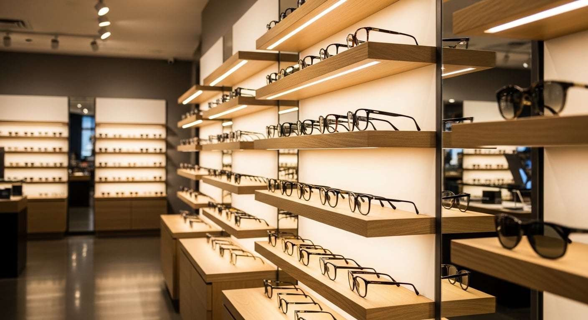
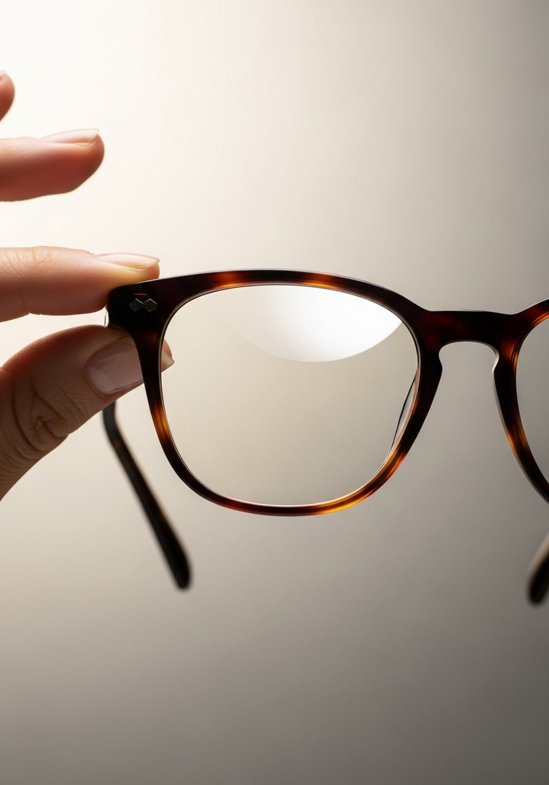
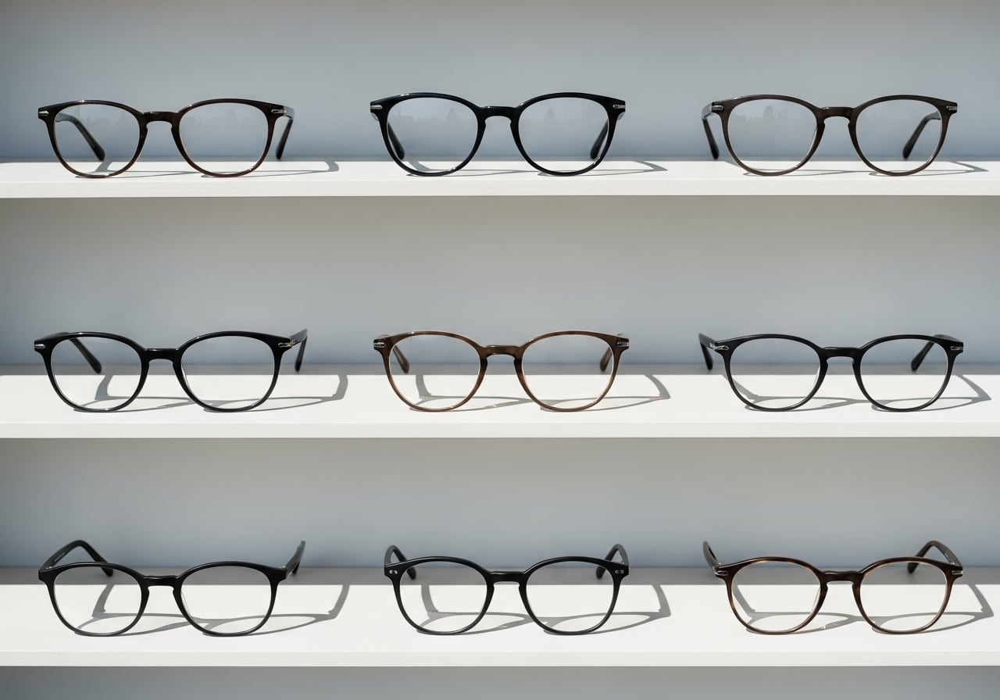

Përvojë që nga
viti 1997.
Kemi nisur në Rrugën Myslym Shyri kur Tirana sapo po hapej, dhe që atëherë i njëjti familjarizim ka mbajtur derën hapur. Brez pas brezi, klientë që na besojnë shikimin e tyre.
Çdo palë syze niset nga një matje e kujdesshme dhe një bisedë e qetë: si i përdorni sytë gjatë ditës, çfarë ju shqetëson, çfarë ju rri mirë. Pjesa tjetër është punë e duarve tona.

Çfarë ofrojmë
Nga receta deri te korniza që ju rri, gjithçka nën të njëjtën çati.
-
Syze me Recetë
Matje e plotë dhe lente të prera saktë për shikimin tuaj.
-
Syze Dielli
Mbrojtje nga drita, me kornizat e markave që doni.
-
Lente Kontakti
Provë, përshtatje dhe këshillë për mbajtje të rehatshme.
-
Lente Optike
Lente të holla, antireflektive ose progresive sipas nevojës.
-
Korniza Dizajnerësh
Zgjedhje nga emrat që njihni, për çdo formë fytyre.
-
Këshillim & Matje
Pa nxitim, deri sa të gjeni palën e duhur.
Markat që mbajmë
- Chopard
- Dolce & Gabbana
- Vogue
- J.F.Rey
- Swarovski
Përzgjedhja ndryshon sipas sezonit. Na vizitoni për koleksionin më të fundit.
Brenda optikës

Na gjen në
Myslym Shyri.
Kaloni nga dyqani për një matje ose thjesht për të provuar disa korniza. Do t'ju presim me kohën që ju duhet, pa nxitim.
Rruga Myslym Shyri, Tiranë